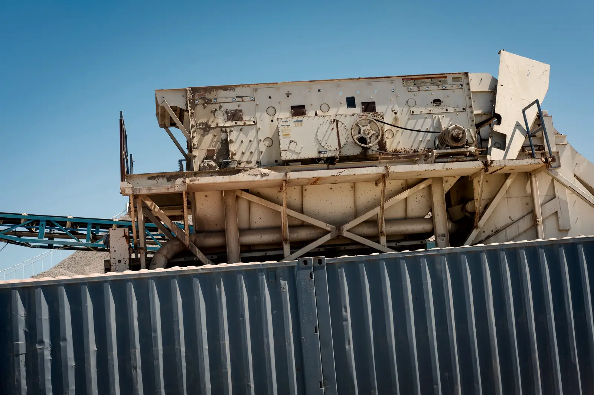
Наклонные
Круговые колебания, угол деки 15–25°. Основная машина на щебне: быстро прогоняет крупные и средние фракции, не забивается.
60–800 т/ч4 моделиМодели
Направления
ДробилкиГрохоты Конвейеры скороЗапчасти скороНа этой странице
МоделиПодборСитаПоставкаКейсыЗапросить КП +7 343 000-00-00Считаем площадь сита по нижней деке и подбираем ячейку под каждую фракцию. Грохот выдаёт ровно то, что вы продаёте, без пересева и перегруза.
Наклонный гонит щебень, горизонтальный точно режет мелочь и мокрый песок, колосниковый стоит перед дробилкой, мобильный ездит за забоем.

Круговые колебания, угол деки 15–25°. Основная машина на щебне: быстро прогоняет крупные и средние фракции, не забивается.
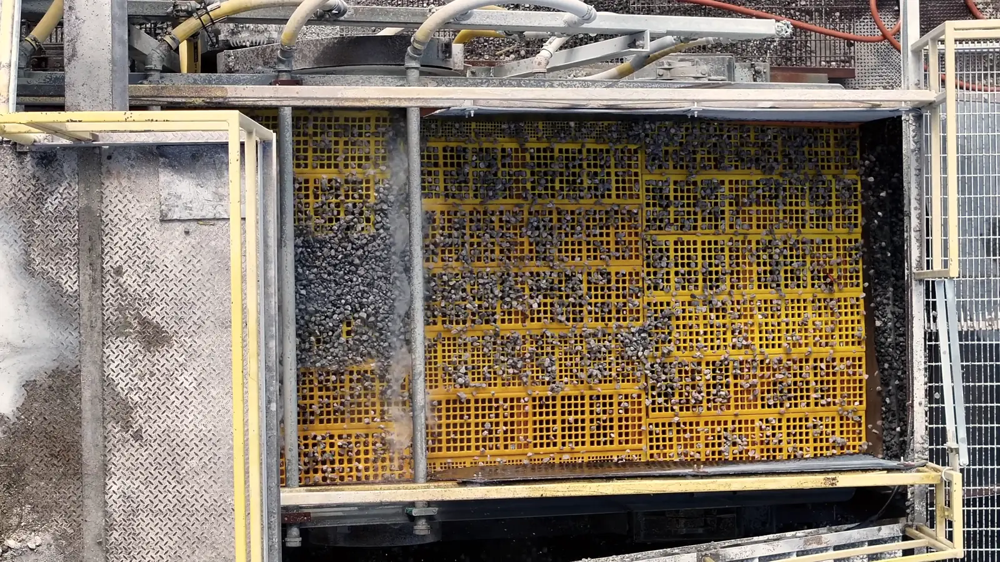
Линейные колебания, дека почти без наклона. Точнее режут мелочь до 5 мм, справляются с мокрым песком и ПГС, ниже по высоте.
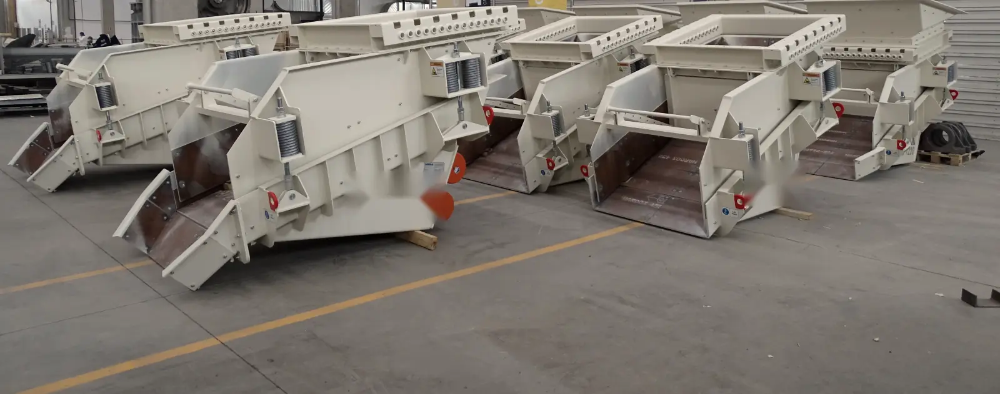
Тяжёлые грохоты и питатели перед дробилкой. Снимают мелочь и глину с горной массы, и дробилка работает только с тем, что нужно дробить.
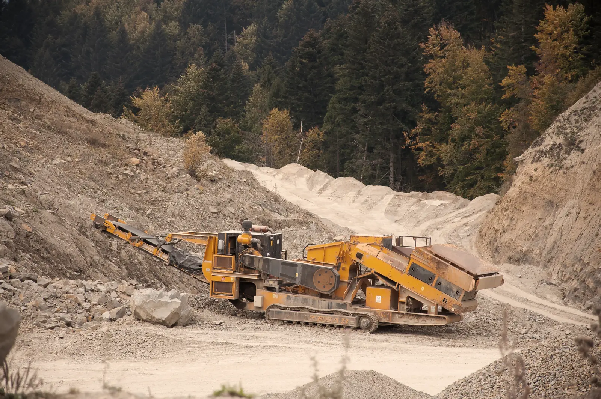
Грохот на гусеницах с отвальными конвейерами и своим дизелем. Для карьеров с переездами, ПГС и сортировки ДСО.
Одиннадцать грохотов: от колосникового питателя до горизонтального на 21,9 м². Площадь указана на одну деку. Отметьте модели — пришлём КП с ситами под ваши фракции.
Таких моделей нет. Опишите задачу в заявке — подберём под заказ.
Производительность — для сухого щебня при ячейке нижней деки 5–20 мм. Мокрый и липкий материал проходит сито медленнее на 20–30 %, это учтено в подборе ниже.
В рабочей версии каталог тянется из 1С.
Четыре вопроса — и справа появится грохот, ячейка на каждой деке и расчёт площади. Тот же расчёт инженер проверит по вашему ситовому анализу.
От материала зависит тип грохота и сита. Полоски — абразивность: чем выше, тем дольше должно служить сито.
Весь поток, который подаёте на деку, а не выход одной фракции. По нему считаем площадь сита.
Можно несколько. Каждая граница между фракциями — отдельная дека, поэтому четыре фракции подряд требуют трёх-четырёх дек.
Мобильный грохот берёт до трёх дек и меньше площади, зато переезжает за забоем без крана.
От сита зависит, сколько грохот проработает до замены и насколько чисто разделит фракции. Ходовые ячейки держим на складе, нестандартные режем под заказ за неделю.

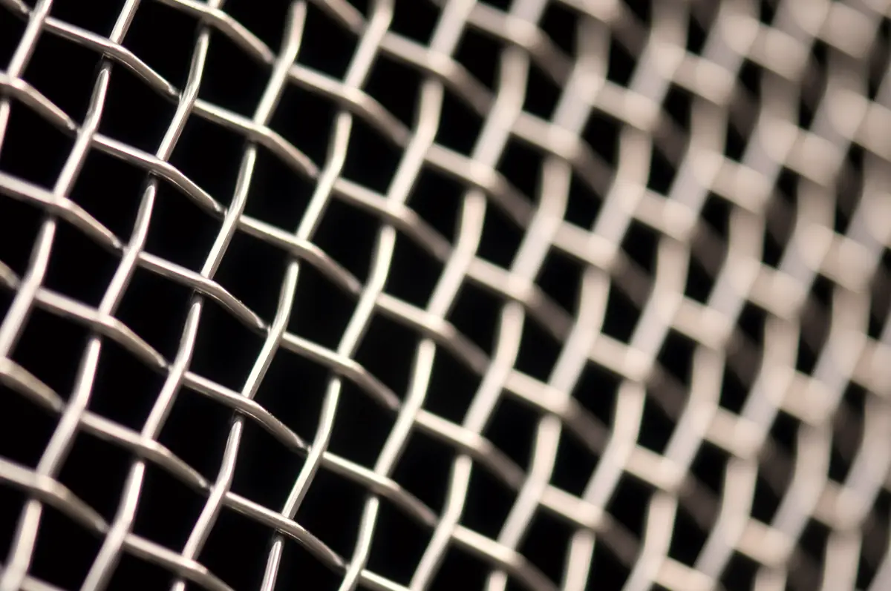
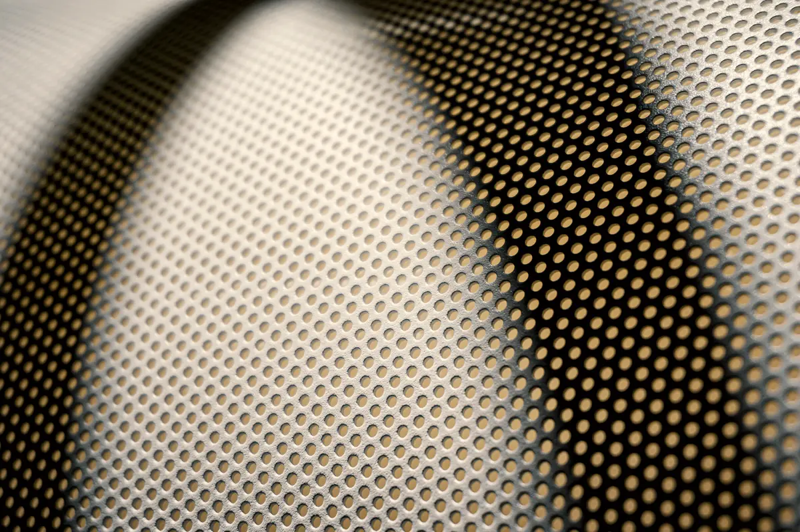

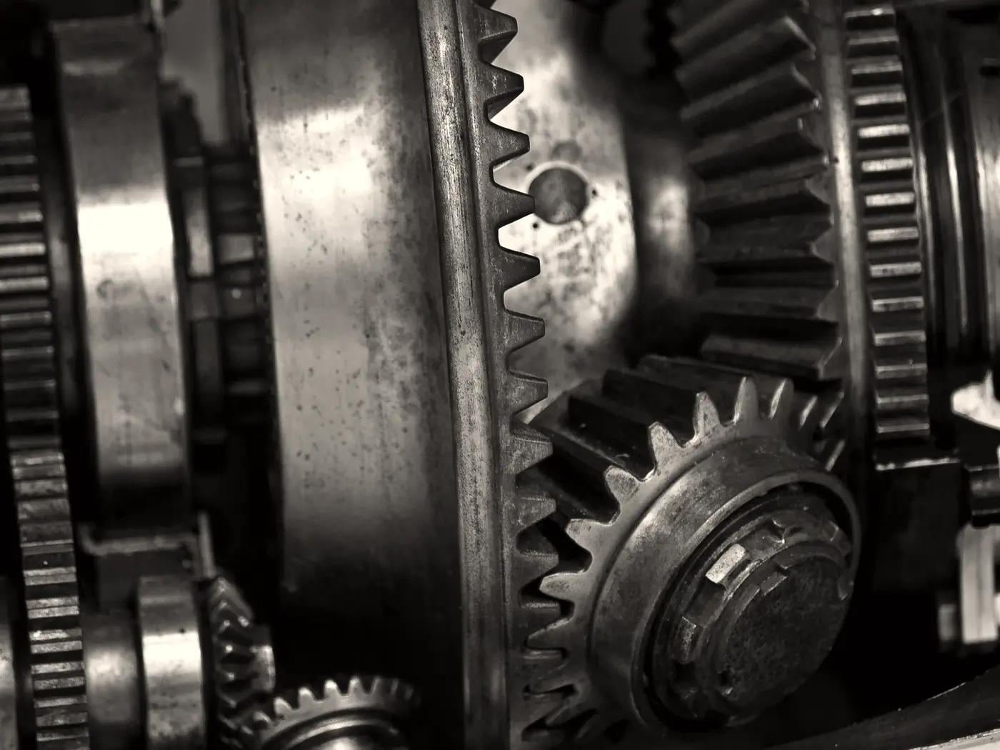
модули 305 × 610 ммячейка 1–100 ммслужат в 5–8 раз дольше проволоки
сталь 65Г и нержавейкаячейка 3–150 ммнатяжные, с крюками под ваш короб
толщина 6–40 ммотверстия 10–150 ммверхняя дека под удар крупного куска
дебалансный вал в сбореподшипники с зазором C4ремонт узла в обмен на старый
стальные и резиновыеподбор по массе короба и числу дек
Пришлите модель грохота, размер короба и фракции. Подберём сита и пришлём цену.
Работаем с юрлицами и ИП по договору поставки, с НДС. Счета и закрывающие документы — через ЭДО.
Материал, тонны в час, фракции, влажность. Подойдут ситовой анализ и фото сита, которое стоит сейчас.
Инженер считает площадь и ячейки по декам и присылает КП: грохот, сита, цена, срок, доставка.
Модели со склада отгружаем за две недели, под заказ — за 45–60 дней. Перед отправкой пришлём фото и видео приёмки.
Шеф-монтаж, натяжка сит, настройка амплитуды и угла. Акт подписываем, когда грохот выдаёт ваши фракции.

Отвечаем за машину, пока она не выдаст фракции на вашей площадке. Дальше — гарантия, склад сит и запчастей и инженер, который знает вашу линию.
Здесь будут ваши объекты: фото с площадки, схема и цифры после запуска. Пока — три типичных проекта, чтобы было видно формат.
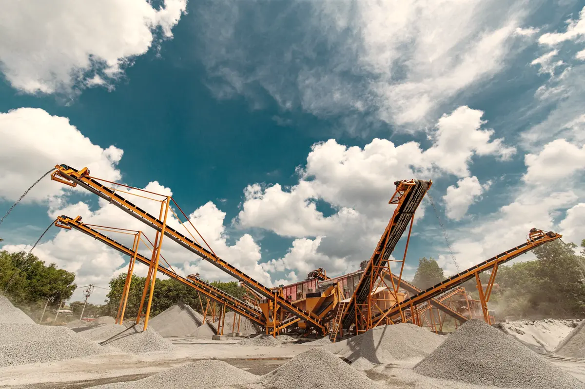
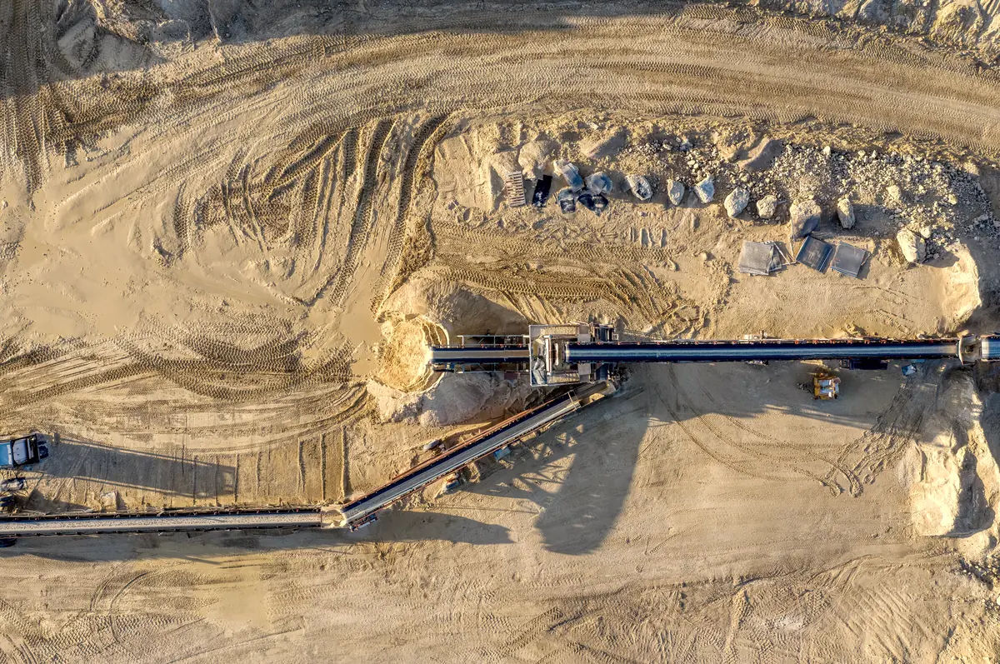
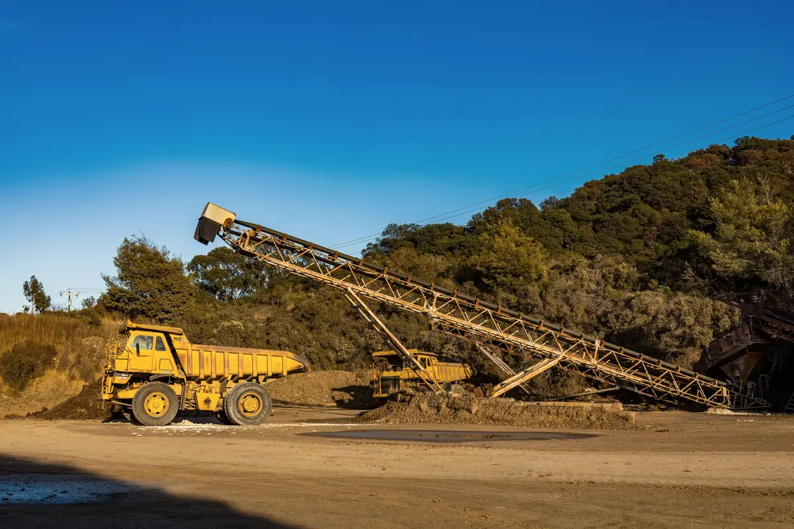
Под каждую группу оборудования — своя страница с таблицей и подбором. Дробилку, грохот и конвейеры посчитаем одной схемой и одним КП.
 Дробильное оборудование16 моделей · 16–800 т/ч · кусок до 1020 мм
Дробильное оборудование16 моделей · 16–800 т/ч · кусок до 1020 мм
 Конвейерыстраница в работеЗапчастистраница в работе
Конвейерыстраница в работеЗапчастистраница в работе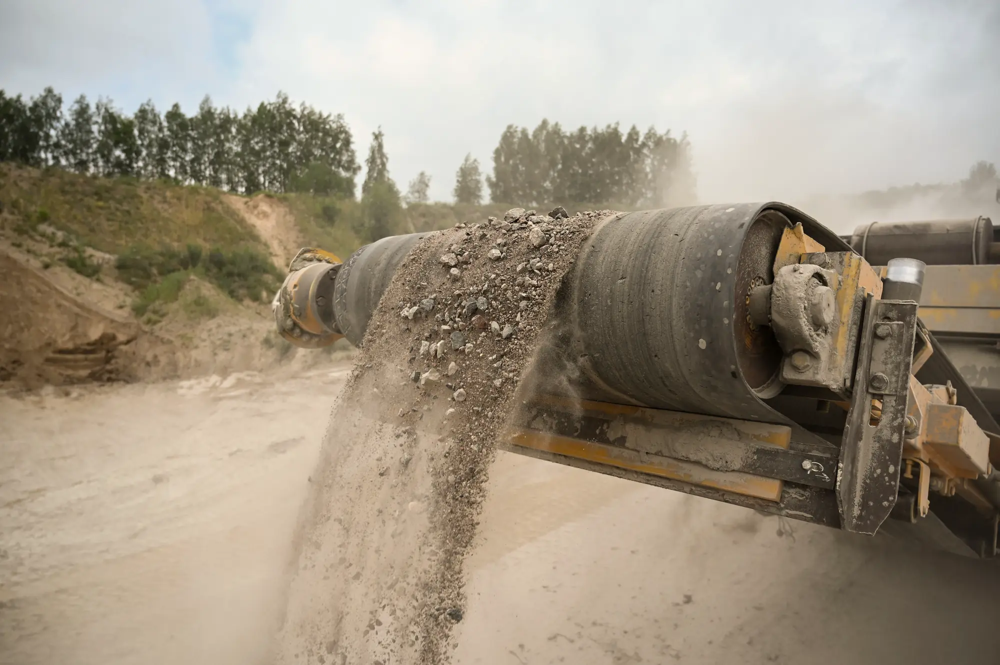
Тонны в час, нужные фракции, влажность и что стоит перед грохотом. Подойдут ситовой анализ или фото сита, которое стоит сейчас.